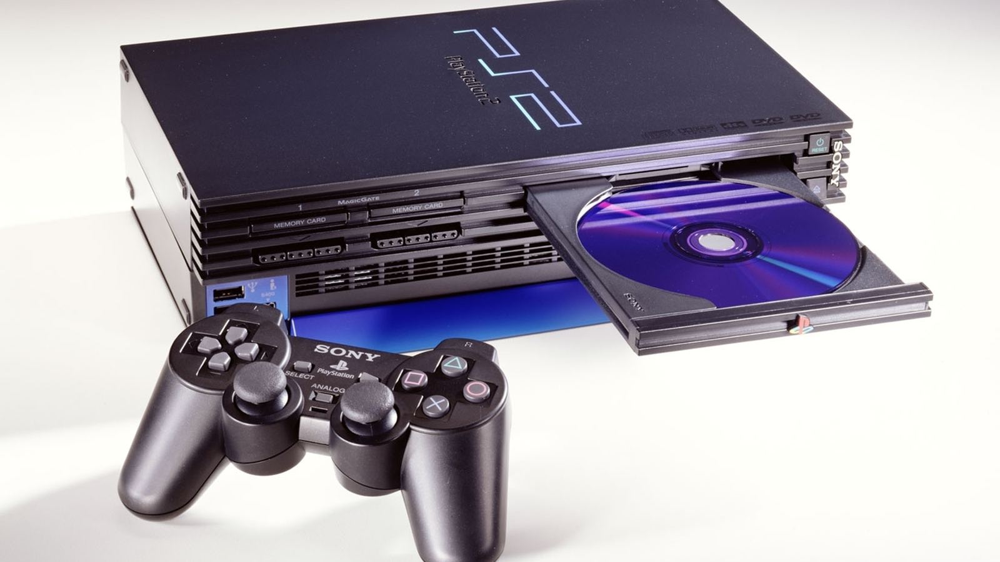
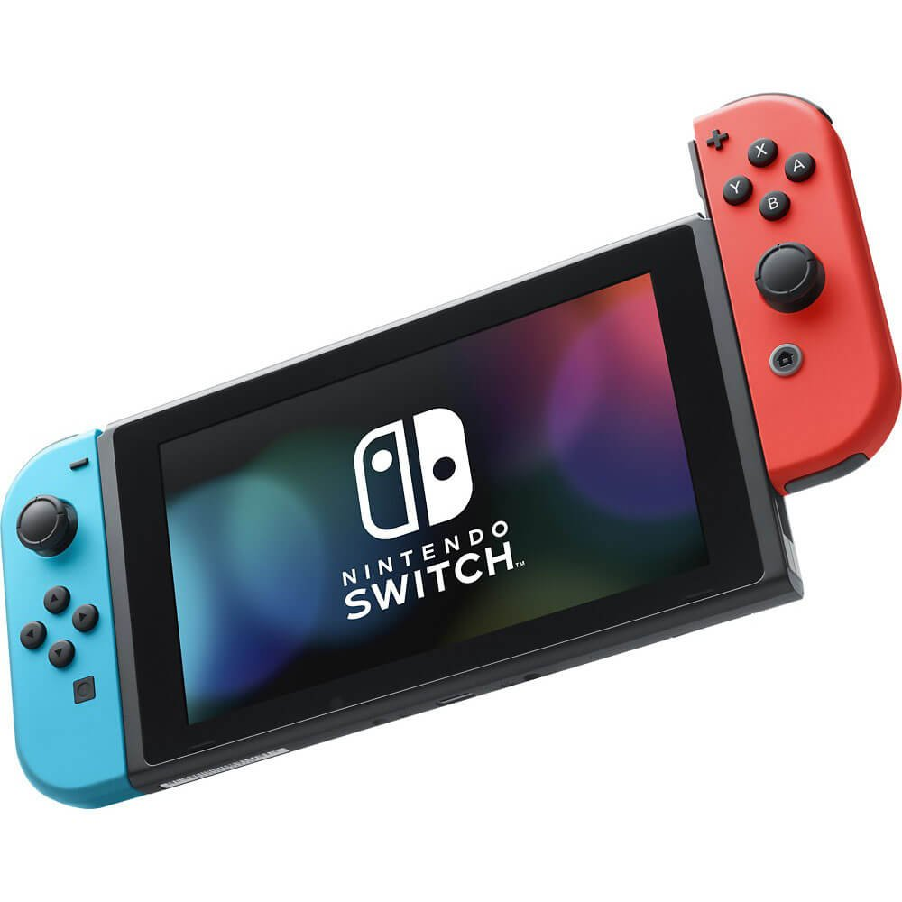
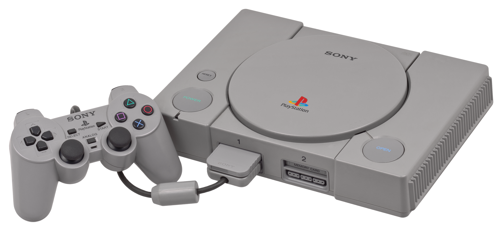
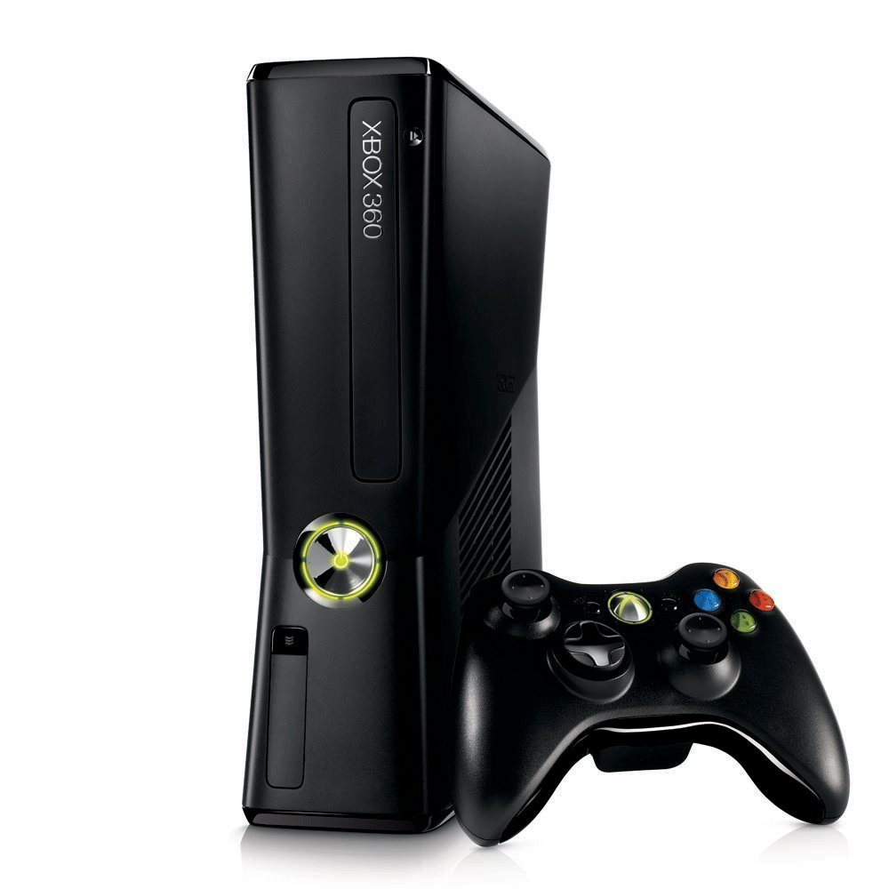

🕹️ Las mejores consolas de la historia
Un recorrido por las máquinas que marcaron generaciones enteras.
🎮 1. PlayStation 2

Lanzamiento: 2000
Ventas: +155 millones (¡la más vendida de la historia!)
Por qué es icónica: Catálogo inmenso, lector de DVD, y juegos como GTA: San Andreas, God of War y Shadow of the Colossus.
🎮 2. Nintendo Switch

Lanzamiento: 2017
Ventas: +139 millones
Por qué es icónica: Revolucionó el gaming al combinar consola de mesa y portátil en una sola. Títulos como Zelda: Breath of the Wild y Mario Odyssey la hicieron legendaria.
🎮 3. PlayStation 1

Lanzamiento: 1994
Ventas: +102 millones
Por qué es icónica: Llevó los juegos en CD a las masas, con sagas como Final Fantasy VII, Metal Gear Solid y Resident Evil.
🎮 4. Xbox 360

Lanzamiento: 2005
Ventas: +84 millones
Por qué es icónica: Popularizó el multijugador online con Xbox Live, y trajo franquicias como Gears of War y Halo 3.
🎮 5. Super Nintendo (SNES)

Lanzamiento: 1990
Ventas: +49 millones
Por qué es icónica: Definió los juegos de plataformas con Super Mario World, los RPG con Chrono Trigger y los shooters con Star Fox.